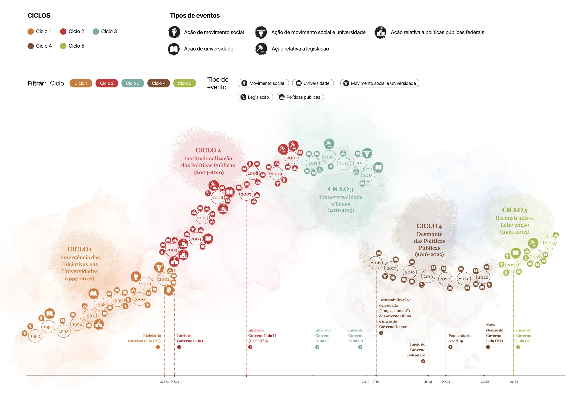

Universidades em rede pela Economia Solidária
Mapa, memória e
movimento
Iniciativas universitárias em parceria com movimentos sociais por uma economia solidária feminista ecológica — da redemocratização à construção de agendas de futuros.
mapeadas
história
temáticos
134 iniciativas em universidades de todas as regiões
Incubadoras, núcleos, projetos e coletivos que atuam com movimentos sociais nos territórios. Filtre por região, tipo de instituição, rede e tema, abra o cartão de cada iniciativa e baixe os dados para suas próprias análises.
- Pública Federal
- Pública Estadual
- Pública Municipal
- Privada Comunitária
Mais de três décadas em cinco ciclos
Ações de universidades e movimentos sociais, políticas públicas federais e legislação, organizadas em ciclos de emergência, institucionalização, transversalidade, desmonte e reconstrução. Veja o todo, entre em cada ciclo e chegue aos eventos com descrição e fontes.

- 1Emergência das iniciativas nas universidades1993–2002
- 2Institucionalização das políticas públicas2003–2010
- 3Transversalidade e redes2011–2015
- 4Desmonte das políticas públicas e resistência2016–2022
- 5Reconstrução e reinvenção2023–2025
Três lutas por direitos, vistas de dentro das iniciativas
Textos e vídeo-animações construídos com pesquisadoras e pesquisadores de movimentos sociais, a partir de seis reuniões-entrevistas realizadas em 2025 com iniciativas da USP, Unifesp, UFRN, UFBA, UFRJ e UFSCar.
-
Estudo 01
Trabalho reprodutivo e cuidado
O cuidado no centro do debate econômico. O estudo mostra como iniciativas de economia solidária, em parceria com a universidade, reconhecem o trabalho reprodutivo como força que organiza a resistência e sustenta a vida nos territórios.
Ler o estudo -
Estudo 02
Soberania e segurança alimentar
Diante das desigualdades do modelo agroexportador, a aliança entre ciência, agricultura familiar e movimentos sociais promove a agroecologia, circuitos curtos de comercialização e o direito a alimentos saudáveis.
Ler o estudo -
Estudo 03
Moradia e território
A luta por habitação disputa o direito à cidade. O estudo reúne experiências em que o apoio universitário a mutirões, cooperativas e ocupações consolida territórios solidários e autogeridos.
Ler o estudo
Para chegar ao tema e ir mais fundo
-
Conceitos
Glossário
Termos e conceitos fundamentais do debate, em linguagem acessível para quem chega ao tema pela primeira vez.
-
Referências
Biblioteca básica
Referências bibliográficas e audiovisuais, o e-book Comunicação Popular e Ciência (2024) e as 15 aulas do curso Economia Solidária e Autogestão de Comuns.
-
Proposições
Agenda de futuros Em construção
Diretrizes para políticas públicas e para uma extensão transformadora, construídas a partir das iniciativas mapeadas.
Da universidade invisível à universidade necessária
Nas pesquisas do Centro SoU_Ciência sobre percepção pública da ciência, identificamos uma onda pró-ciência durante a pandemia de Covid-19. As universidades, centros da produção científica do país, não se beneficiaram desse reconhecimento: seguem alvo de ataques e pouco conhecidas em sua atuação junto à sociedade.
Inspirado no conceito de Universidade Necessária, de Darcy Ribeiro, este painel dá visibilidade a uma universidade invisível: programas, núcleos, incubadoras e coletivos que há décadas trabalham com movimentos sociais em práticas de cooperação e cuidado, trabalho associado e autogerido, tecnologias sociais e sustentáveis.
O painel resulta da Linha de Pesquisa 7 do SoU_Ciência e é construído de forma progressiva e colaborativa: convive com dados incompletos, aceita atualizações e será validado com as redes universitárias antes de cada etapa de publicação.
A história é aberta, está em disputa e movimento. Ao aproximar universidade, ciência e movimentos sociais, essas iniciativas trazem contribuições para a construção de agendas de futuros.
Equipe da Linha 7 · SoU_Ciência